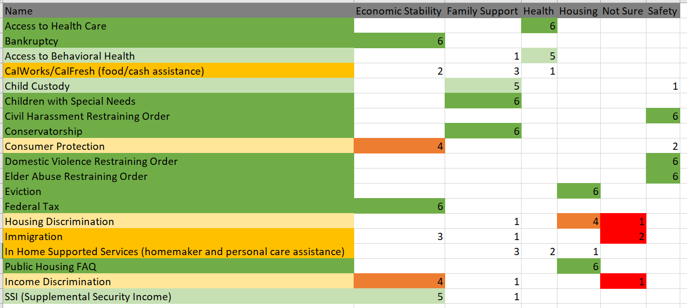

Project Overview
The Legal Aid Society of San Diego (LASSD) is a non-profit that provides free legal services to lower income San Diego residents. The LASSD provides services to many areas such as health, housing, and economic hardships, but their information is arranged in a way where it is hard for users to find what they need quickly. As most users that visit that site are in need of help, reducing stress in an already strenuous situation will be effective in providing the best care for users.
Problems
- The mobile website (how majority of users access the site) contains three different types of navigation (hamburger, breadcrumb, footer navigation)
- The navigation labels are not clearly named
- Some important forms (contact and appointment) are hidden
Role
Conducting content inventory
Conducting iterative usability testing
Creating a mid-fi prototype
Assimilating Report
Team
Samantha Wanamaker
Duration
10 weeks
Objective
The goals for this project would be to rearrange the navigation so users will be able to find the information they need quickly and efficiently. This will be achieved through accessing the current information architecture, finding areas that need improving and testing those assumptions.
Some of the major content that users need to access are:
- Services provided by the firm and how to access these services
- Jobs provided at the firm
- Donations to the firm
- Publications

Content Inventory
The content inventory focused on primary, secondary, and tertiary level navigation, with some quaternary items. The major and obvious problem was the multiple navigation system. The top and side navigation contained the same content, so I noted it once on my inventory and focused on using the top navigation. Some pages were listed under multiple secondary navigation pages. There were many external links and PDFs scattered throughout the pages with minimal organization, which I noted on my inventory. There were some important pages (e.g. outreach form) which were linked in the middle of some pages.
Card Sort
Sort 1: Hybrid
The first card sort was not very effective in providing insight into content organization. There were 30 cards and 9 categories.
The results came out varied across the four participants that completed the card sort. Some of the variations came from the lack of clarity of the cards. As the site is geared for legal services, many of the terms may have been unfamiliar to the participants, especially terms that are only relevant in California, such as "CalFresh" or "CalWorks".
Take Away
- Create better category titles that are more clear in their meaning
- Add in definitions for terms so that participants can make better informed selection during sorts
Sort 2: Hybrid
The second card sort focused primarily on the services offered by the firm, as that is where the majority of the content resided. There were 19 cards and 6 categories. The results showed that participants sorted most cards into similar categories. Although there were 6 cards (highlighted in yellow) that users had trouble placing.
Take Away
- Create new categories or rename items for clarity for those that participants had trouble with
- There were two new categories created after this sort: "Immigration" and "Consumer Protection". These two categories are meant to only contain one item each, as I could not come up with a category that better encompassed these two terms or a way to distribute and combine the other items.
Sort 3: Hybrid
The third card sort placed the other items and categories from the site along with the new items and categories created from the second card sort. There were 19 cards and 6 categories.
The results showed more consolidation of cards. The new categories ("Immigration", "Consumer Protection", "About the Firm", and "Jobs at the Firm") helped participants sort the items that were creating confusion in the first card sort.
IA Testing: Treejack
The first two tests involved 5 tasks participants had to complete regarding the navigation menu. The third test involved two tasks which were used to clear up confusion regarding a couple of navigational labels.
Test 1
This test was done after the first card sort. It was of no surprise that the result and comments showed confusion from the participants. The success rates for all the tasks were low (70%) and participants also spent time looking through the navigation tree. This showed that there really needed to be a more in-depth look into the categories I created and to go back to the card sort to create a better layout for my items.
Test 2
The next treejack test made from the data gathered from the second and third card sort had much better success rates. The same tasks were used to measure improvements to the navigation layout. However, participants still struggled with the navigation, especially for the first task. This turned out to be the task involving "CalFresh/CalWorks" which was a problem item in the card sort as well. This was due to an oversite on my part as CalFresh/CalWorks is a California specific program.
Test 3
This test was focused on the "CalFresh/CalWorks" item that caused confusion in the previous test. The new labels and categories provided a 100% success rate on both tasks with 5 participants.


Sitemap
The final sitemap created from all the data gathered from the card sort and treejack testing. The overview has six top level navigation. Since the second level navigation for "Services" contains eight categories, it was expanded in a separate page.
IA Testing: Chalkmark
All tests had high success rates. Majority of the participants clicked on the correct area. In the wireframe, the entire box area where the text is contained is clickable, but a larger font might be beneficial so users do not feel like they have to aim to click.


Mid-fi Wireframe
The wireframe was created with the sitemap in mind. The biggest difficulty was finding a way to present all of the items in the "Service" categories without having the user go through multiple pages or clicking through the navigation panel. The solution was to create a "Service" page that contained dropdown menus with category titles. Clicking on the title or arrow would reveal the individual items under the category. This way the user can view multiple categories at once and make a decision on which would best have the information they need.
Retrospective
- Lots of trial and error throughout the process
- I wish I had taken more time to put thought into the wording and intent so that terms would have been more easily understood by the participants so I could have saved myself time from redoing the card sort in the beginning